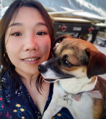
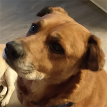
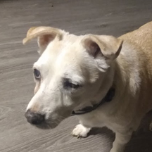

Malee's Portfolio
Welcome to my portfolio.
Hello! Malee here. It's a pleasure to meet everyone. Here is a little about myself:
- I was born somewhere between Laos and Thailand while my parents were en route to a refugee camp.
- I recently moved to Fresno, CA from Visalia, CA and I'm living with 2 dogs, Max and Mister.  
- I'm studying computer science at FSU, but prior to this I was working full-time as a supervisor at a diode manufacturing company and attending community college part-time. My job included having to relay user feedback to programmers and digging through databases. Eventually, I started to make simple programs for my team using Microsoft Access. It was my first exposure to coding and what ultimately lead me to pursue computer science as a career. I decided to take the leap and become a full-time student in the summer of 2020.
- I love dogs (and i'm also allergic to them).
- My favorite food is shrimp. I will eat any dish if it's included.
- Most of my coding experience is with c++, but I'm learning python and java as well. Feel free to view my github.
- Other than tinkering with code, I enjoy taking photos with my potato phone. I'll usually take photos of things I find interesting or humorous. See my gallery here!
Click here to see content created by server code.
Click here to get a random message: